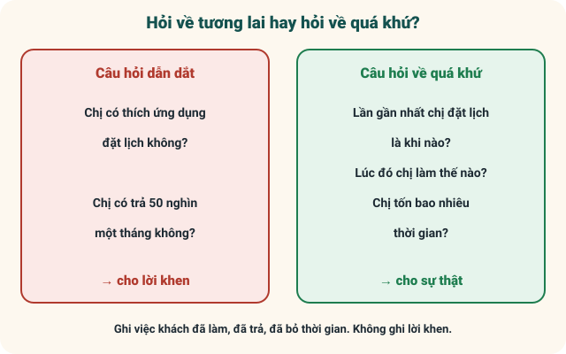

K1 · Lắng nghe và hiểu đúng › Bậc 4 Thành thạo
Từ ý tưởng đến giả thuyết: khám phá khách hàng
Bài này làm Tờ 1: Phiếu giả thuyết và kịch bản phỏng vấn. Mẫu in. Nếu bạn chưa quen lắng nghe để hiểu đúng, xem trước bài Xác nhận chỉ dẫn.
1. Mục tiêu
- Viết 3 giả thuyết về khách hàng, vấn đề và mức sẵn lòng trả.
- Phỏng vấn không dẫn dắt: hỏi về việc khách đã làm, không hỏi họ có thích ý tưởng không.
2. Khởi động truy xuất
Đây là bài đầu của khóa. Hãy nhớ lại một việc bạn từng làm:
- Lần gần nhất bạn mua một món đồ mới thay cho món cũ, điều gì khiến bạn đổi?
- Lần gần nhất có người khen ý tưởng của bạn, họ có bỏ tiền hay thời gian ra không?
Gợi ý
- Thường là một vấn đề lặp lại đủ khó chịu. Đó chính là thứ bạn sẽ đi tìm ở khách hàng.
- Lời khen dễ nói. Tiền và thời gian thì khó bỏ ra hơn. Bài này dạy bạn phân biệt hai thứ đó.
3. Giải thích
Một ý tưởng kinh doanh là một chuỗi phỏng đoán. Việc đầu tiên là viết các phỏng đoán đó ra, để kiểm được.
Ba giả thuyết cần viết trước:
Tờ 1. Ba giả thuyết
- Khách hàngAi, cụ thể đến mức bạn biết tìm họ ở đâu.
- Vấn đềHọ gặp gì, bao lâu một lần, đang xử lý thế nào.
- Sẵn lòng trảHọ đang trả bao nhiêu tiền hoặc công sức cho cách hiện tại.
Mẫu câu: "Chúng tôi tin rằng [ai] gặp [vấn đề] ít nhất [tần suất], và hiện đang trả [chi phí] cho [cách hiện tại]."
Một giả thuyết tốt phải có thể sai. "Mọi người đều cần đồ ăn sạch" không thể sai, nên không kiểm được.
Phỏng vấn để kiểm giả thuyết. Mục tiêu là nghe sự thật về quá khứ, không xin ý kiến về tương lai. Ba quy tắc:
- Hỏi về lần gần nhất. "Lần gần nhất chị gặp chuyện này là khi nào? Chị đã làm gì?"
- Chưa giới thiệu giải pháp. Khi bạn kể ý tưởng, người nghe thường lịch sự khen.
- Nghe nhiều hơn nói. Hỏi thêm "Rồi sao nữa?" thay vì giải thích.

Ghi bằng chứng, không ghi lời khen. Lời khen ("hay quá") không phải bằng chứng. Bằng chứng là việc khách đã làm: đã tự tìm cách giải quyết, đã trả tiền, đã bỏ thời gian.
Sau 10 cuộc phỏng vấn, đếm lại. Bao nhiêu người thật sự gặp vấn đề? Bao nhiêu người đã tự tìm cách xử lý? Kết quả quyết định bạn giữ, sửa hay bỏ giả thuyết.
4. Ví dụ tại nơi làm việc Việt Nam
Tình huống giả định. Chị Hạnh ở Đà Lạt muốn bán rau sạch đóng hộp theo tuần cho gia đình ở TP.HCM.
Lúc đầu chị hỏi bạn bè: "Bạn có mua rau sạch giao tận nhà không?" Ai cũng nói có. Chị suýt đặt in 2.000 hộp.
Chị viết lại thành giả thuyết. Khách hàng: mẹ đi làm có con nhỏ, ở quận 7. Vấn đề: mỗi tuần mất ít nhất 2 giờ đi chợ, và lo rau có thuốc. Sẵn lòng trả: đang trả thêm khoảng 20% để mua ở cửa hàng rau có nhãn.
Chị phỏng vấn 10 người trong nhóm phụ huynh của trường con. Chị hỏi: "Tuần trước chị mua rau ở đâu? Mất bao lâu? Có lần nào chị bỏ rau vì không yên tâm không?"
Kết quả: 7 người mua ở siêu thị khi tiện đường, chỉ mất 20 phút. Chỉ 2 người đã từng đặt rau online. Giả thuyết "mất 2 giờ mỗi tuần" sai với đa số.
Nhưng 6 người kể đã bỏ rau vì sợ thuốc. Chị giữ giả thuyết về nỗi lo an toàn, và sửa giả thuyết về thời gian.
Vì sao cách này tốt: chị hỏi về việc đã làm, nên tránh được 2.000 hộp in thừa. Chị cũng tìm ra vấn đề thật hơn.
5. Thực hành
Tình huống giả định. Anh Khoa muốn mở dịch vụ sửa xe máy lưu động cho nhân viên văn phòng ở Hà Nội.
Viết 3 giả thuyết theo Tờ 1. Viết 4 câu hỏi phỏng vấn không dẫn dắt.
Gợi ý 1
Khách hàng cụ thể: nhân viên văn phòng nào, ở khu nào, đi xe gì? Vấn đề: xe hỏng lúc nào thì khổ nhất?
Gợi ý 2
Mỗi câu hỏi nên bắt đầu bằng "Lần gần nhất…", "Lúc đó anh/chị đã…", hoặc "Mất bao nhiêu…".
Lời giải mẫu
Giả thuyết
- Khách hàng: nhân viên văn phòng ở các tòa nhà quận Cầu Giấy, đi xe tay ga, gửi xe ở hầm.
- Vấn đề: ít nhất 2 lần một năm, xe hỏng giữa ngày làm việc. Họ phải xin nghỉ hoặc dắt xe đi xa.
- Sẵn lòng trả: họ đang mất nửa ngày công, cộng tiền sửa và tiền xe ôm.
Câu hỏi
- Lần gần nhất xe anh/chị hỏng là khi nào, ở đâu?
- Lúc đó anh/chị đã làm gì? Mất bao lâu?
- Anh/chị đã tốn bao nhiêu tiền, kể cả tiền đi lại?
- Anh/chị có từng tìm dịch vụ sửa tại chỗ chưa? Tìm thế nào?
(Thông tin là giả định.)
6. Tự kiểm tra
Chọn đáp án. Mỗi lựa chọn đều có giải thích.
Câu 1. Câu nào là một giả thuyết kiểm được?
-
Chưa đúng. Câu này gần như không thể sai, nên không kiểm được.
-
Đúng. Đúng. Có khách hàng cụ thể, vấn đề và tần suất. Phỏng vấn có thể cho thấy nó đúng hay sai.
-
Chưa đúng. Đây là mong muốn, không nói gì về khách hàng hay vấn đề.
Câu 2. Câu hỏi phỏng vấn nào ít dẫn dắt nhất?
-
Chưa đúng. Câu này giới thiệu giải pháp và hỏi về tương lai. Người nghe dễ trả lời lịch sự.
-
Đúng. Đúng. Câu hỏi về một việc đã xảy ra, chưa nhắc đến giải pháp của bạn.
-
Chưa đúng. Câu này gợi ý sẵn câu trả lời là bất tiện.
Câu 3. Sau 10 cuộc phỏng vấn, 9 người nói "ý tưởng hay quá", nhưng chưa ai từng tự tìm cách giải quyết vấn đề. Bạn kết luận gì?
-
Chưa đúng. Lời khen không phải bằng chứng. Chưa ai hành động để giải quyết vấn đề.
-
Đúng. Đúng. Người gặp vấn đề thật thường đã tự thử cách nào đó, hoặc đã trả tiền cho nó.
-
Chưa đúng. Bạn thân càng dễ khen. Nên phỏng vấn đúng nhóm khách hàng.
Câu 4. Trong cuộc phỏng vấn, khi nào nên kể về giải pháp của bạn?
-
Chưa đúng. Kể sớm làm khách trả lời theo giải pháp của bạn, không kể về đời thật của họ.
-
Đúng. Đúng. Nghe sự thật về quá khứ trước. Phản ứng với giải pháp chỉ là thông tin phụ.
-
Chưa đúng. Có thể kể ở cuối. Chỉ cần nhớ phản ứng lúc đó không phải bằng chứng mạnh.
7. Phản tư
- Ý tưởng của bạn đang dựa vào giả thuyết nào mà bạn chưa từng kiểm?
- Bạn đã từng coi lời khen là bằng chứng chưa? Kết quả ra sao?
8. Áp dụng thật
Trong 7 ngày tới, viết Tờ 1 cho ý tưởng của bạn. Phỏng vấn ít nhất 5 người đúng nhóm khách hàng. Ghi lại việc họ đã làm, không ghi lời khen.
Mức bằng chứng. Viết ý tưởng thành giả thuyết rồi kiểm là cách tiếp cận đã được thử nghiệm ngẫu nhiên với startup (xem Bài 2). Ba quy tắc phỏng vấn là cách làm phổ biến trong cộng đồng khởi nghiệp. Site chưa tìm thấy nghiên cứu có bình duyệt kiểm riêng từng quy tắc.
9. Siêu dữ liệu
| skill | K1 · Lắng nghe và hiểu đúng |
|---|---|
| level | Bậc 4 · Thành thạo |
| group | N7 |
| framework_map | EntreComp: Spotting opportunities; Valuing ideas; WEF: Empathy and active listening; Analytical thinking; CSfW: 2a Communicate for work; SkillsFuture CCS: Customer Orientation (chỉ dẫn chiếu) |
| updated | 2026-11-14 |
Hoàn thành bài
Đánh dấu đã học để site gợi ý lịch ôn sau 1, 3 và 7 ngày. Dữ liệu chỉ lưu trên máy của bạn.
Lịch ôn gợi ý: